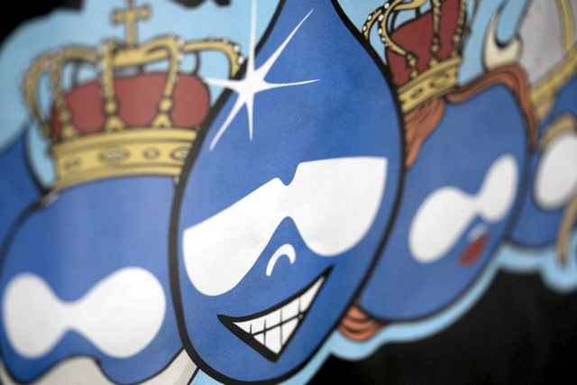
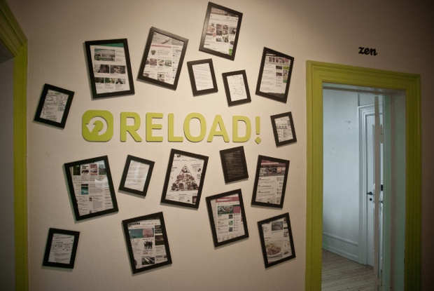
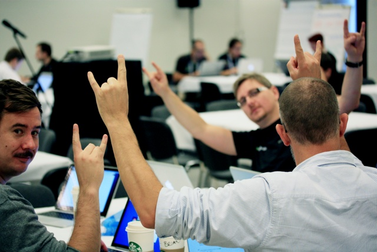

Welcome to Reload on GitHub
We are the self-proclaimed Drupal Navy Seals of Denmark :-)
We are 16 geeky, honest and sharp Reloaders. Don’t expect white collars and ties, but do expect competent counseling and sustainable development.
Our biggest asset is our kick-ass developers collective skill-set and knowledge within web development and Drupal. Our technical insight and extensive know how when we talk tomorrows concepts, tools and processes.
We care alot about Drupal and the community behind it. We have substantial personal and professional relationships within the community. We are truly open source, and share our knowledge as well as our code.
We are not a full service agency. We highly value to be involved early in the process of scoping an upcoming project, but we are a technically based agency, whose main focus is on delivering high quality of code, and valuable technically counselling.
Hence, we have a handful of skilled and trusted creative freelancers, and agencies who are focusing on information architecture, design etc.
Reload was founded April 1st 2010.
The three owners are:
- Jens-Otto Paludan, Chairman of the board.
- Rasmus Luckow-Nielsen, CEO
- Kasper Garnæs, CTO
In addition we have 14 skilled employees:
- 1 Office manager
- 2 Project managers / scrum masters
- 1 Dedicated tester
- 10 Drupal specialist developers
Find us on the web on reload.dk (in Danish though).
Active contributors
We are very active contributors to Drupal in general and this is something we as a company value a lot.
See: Reload about open source and our company profile at drupal.org
We are also members of the Danish Drupal Supplier Association, which primarily works to spread the knowledge of Drupal and to increase the quality of Drupal development in general.
Our local community (Drupal Denmark) is very strong, based on country size / attendance at DrupalCon. Yet Denmark is a small country, so most of us have many personal and professional relationships across the community.
Find us at DrupalCon, Camps and other gatherings
Normally we do not attend the North American DrupalCon. But all of us, attend the European Con together with a number of camps every year. We always strive to do relevant and interesting talks ourselves as well and we always sponsor our local DrupalCamp.
Proud and Agile
We are proud of our ability within agile processes. Being good at agile and “consultancy-SCRUM” is one of our top selling-points, and a rather unwavering requirement if you want to do projects with us. More about that in this presentation: Agile that works and the tools we love (Drupalhagen 2012).
Mostly customers come to us, through “the word of mouth”, actually we do not do sales as such. Because of this market-position we can be a bit picky about the projects we like to take on board, and thereby make sure that we can attract and hold on to the best Drupal developers.